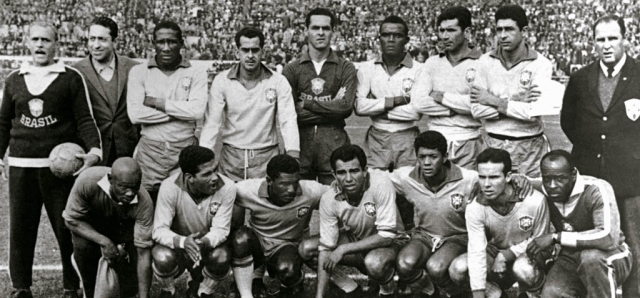

A Copa do Mundo de 1962, realizada no Chile, marcou a consagração do Brasil como uma potência do futebol mundial, ao conquistar seu segundo título consecutivo. A seleção brasileira chegou ao torneio como atual campeã e favorita, trazendo consigo grande parte do elenco vitorioso de 1958, incluindo nomes lendários como Pelé, Garrincha, Didi, Vavá e Zagallo.
O torneio começou com uma grande expectativa em torno de Pelé, o jovem gênio que havia brilhado na Suécia quatro anos antes. Ele marcou um belo gol na estreia contra o México, mas uma lesão muscular no jogo seguinte contra a Tchecoslováquia o tirou do restante da competição. Com isso, o protagonismo da equipe passou para outro craque: Garrincha, o ponta-direita do Botafogo, conhecido por seus dribles desconcertantes e imprevisibilidade dentro de campo.
Garrincha brilhou intensamente a partir das quartas de final, especialmente nos jogos contra a Inglaterra e o Chile, quando marcou dois gols em cada partida. Sua atuação foi fundamental para levar o Brasil à final contra a Tchecoslováquia, que havia eliminado o México e a Iugoslávia. Na decisão, mesmo com um começo difícil e saindo atrás no placar, o Brasil virou o jogo com gols de Amarildo, Zito e Vavá, vencendo por 3 a 1 e levantando mais uma vez a taça Jules Rimet.
Além de Garrincha, que foi considerado o melhor jogador do torneio, outras estrelas se destacaram, como o goleiro Gilmar, o zagueiro Mauro, o volante Zito e o atacante Vavá, que se tornaria bicampeão mundial marcando gols em ambas as finais de 1958 e 1962. Outro nome que ganhou notoriedade foi Amarildo, o substituto de Pelé, que cumpriu um papel essencial ao manter o poder ofensivo da equipe.
A conquista de 1962 consolidou o estilo de jogo brasileiro baseado na habilidade, criatividade e talento individual. Mesmo diante de adversidades, como a ausência de Pelé, o Brasil mostrou sua força coletiva e a genialidade de Garrincha, conquistando com brilho o bicampeonato mundial e escrevendo mais um capítulo inesquecível na história do futebol.
